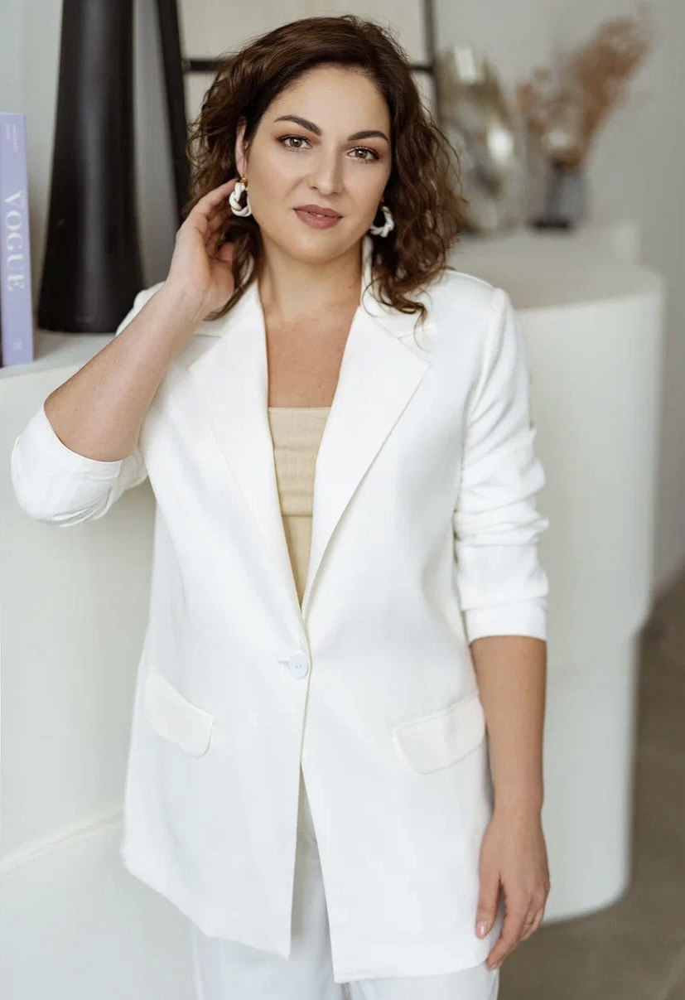
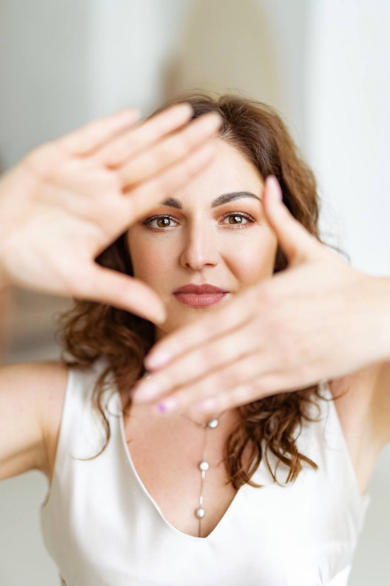

Ты держишь лицо на работе и перед всеми, а по ночам разваливаешься на части. «Опора» — 8 недель, чтобы вернуть сон, тишину и себя. Не годами копаться в прошлом, а конкретные шаги — уже с первой недели.
Записаться на бесплатную диагностику Узнать, с чего начать ↓
2-3 касания в неделю. Урок, разбор в чате, живой созвон — и гарантия возврата за первую неделю.
«3 часа ночи. Ты снова открываешь его переписку и не можешь остановиться».
Знакомо?
Днём ты железная: работа, дети, быт, всё на автомате. А вечером, когда все уснули, наваливается то, что ты весь день держала на расстоянии.
Ты не спишь. Или спишь и просыпаешься в четыре утра с комом в груди.
Любая мелочь — сообщение от бывшего, вопрос ребёнка «а когда папа приедет», чужие сторис «мы с любимым» — и тебя выбивает на полдня.
Ты срываешься на ребёнка от усталости, а потом полночи тонешь в вине: «какая я после этого мать».
Ты помножила себя на ноль. На себя тратить стыдно — «лучше детям, чем мне».
Иногда ловишь своё отражение и не узнаёшь: куда делась та, что была?
Это не потому, что ты слабая или сломанная. Это нормальная реакция психики на то, что с тобой произошло. Но жить в этом дальше — не вариант.
Дело не в тебе. Дело в том, что почти никто в этой теме не берёт сразу три вещи, которые у тебя болят одновременно: тебя саму, ребёнка и бывшего, и деньги с бытом после развода. А тебе нужно функционировать, растить ребёнка и проживать кризис — одновременно.
«Опора» — не про то, чтобы просто пережить бывшего. Это про то, чтобы собрать себя — и не сломать ребёнка.
Вернуть сон, силы, тишину в голове.
Снять вину, забрать у бывшего пульт от твоего состояния.
Увидеть сценарий, вернуть себе себя, собрать опору: деньги, быт, будущее.
Не годами копать прошлое. Сдвиг и действия — с первой недели.

Психолог
Я не учу этому по книжкам. Я сама прошла два развода. Было финансовое дно. Было «кому я такая нужна с детьми». Было — собирать себя с пола в буквальном смысле.
Я знаю, что такое держать лицо на людях и разваливаться в одиночестве. И знаю, каким путём из этого выходят — не за годы, а за конкретные шаги, которые я прошла сама и провела через них других женщин.
Работаю в методах ДПДГ, КПТ и телесно-ориентированной терапии — беру не только разговором, но и телом, если тревога и бессонница застряли физически.
Останавливаем свободное падение и возвращаем телу и психике базовый ресурс. Техника «Стоп Шторм» — чтобы стало тише уже сейчас. Работа со сном и телесной тревогой.
К концу блока: перестала падать, стало тише, вернулись силыСнимаем вину перед детьми и забираем у бывшего пульт от твоего эмоционального состояния. Учимся сухой деловой дистанции вместо эмоциональных качелей.
К концу блока: ребёнок и бывший больше не разрывают, вина ослаблаВидим сценарий, который тащит в одни и те же грабли. Возвращаем самоценность — ты не функция, а человек. Собираем финансовую опору и план на будущее.
К концу блока: увидела корень, вернула себя, собрала опоруУрок в записи
Разбор в закрытом чате — приносишь свою ситуацию
Живой созвон — в работу берут 2-3 женщины
Поддержка в закрытом чате
Алина, 41 год
Двое подростков. Годами обесценивающий, эмоционально холодный брак — по сути «развод внутри отношений», без официального развода.
Тащила всё одна, теряла себя, боялась остаться одна — и одновременно больше не могла так жить.
Результат: вышла из созависимого сценария, приняла решение о разводе. Сегодня в разводе, строит своё дело, финансово самостоятельна.
Кристина, 39 лет
Один сын. Развод случился внезапно — муж ушёл без объяснений.
Не могла отпустить и принять реальность, крутила «почему», тревожилась за ребёнка и будущее.
Результат: прошла разрыв без застревания в боли. Сегодня финансово устойчива, работает без выгорания, выстроила здоровый график общения ребёнка с отцом.
Дарья, 34 года
Долго не получалось забеременеть. Брак — эмоционально и физически холодный, без вовлечённости партнёра.
Ощущение «со мной что-то не так», боль от невозможности реализовать себя — ни в отношениях, ни в материнстве.
Результат: осознанно завершила отношения, где не было развития. Выстроила опору на себя, вышла в свой бизнес.
Регина, 42 года
Один ребёнок. Хронический конфликт с мужем — вся ответственность за семью на ней одной.
Перегруз, злость, ощущение, что её не видят и не слышат — потеря энергии и желания жить своей жизнью.
Результат: выстроила границы и систему ответственности по ребёнку, перестала тащить всё одна. Сама зарабатывает и управляет своей жизнью.
Пройди неделю 1. Если почувствуешь, что это не твоё — просто напиши, и мы вернём всю сумму. Без объяснений и без вопросов.
Группа небольшая — на живых созвонах в работу лично беру 2-3 человека за встречу, поэтому у каждой участницы достаточно личного внимания.
Для сравнения: 8 недель работы в группе плюс личные сессии в расширенном тарифе — это примерно как 5-6 индивидуальных сессий с психологом, только с поддержкой на каждый день, а не раз в неделю.
Не уверена, какой тариф подойдёт?
Начни с бесплатной диагностики — поможем выбратьМест немного — потому что на живых созвонах в работу лично берём 2-3 человека за встречу, и это реальное ограничение формата, а не маркетинговый приём.
Запишись на бесплатную диагностику (15-20 минут). Мы поможем понять, на какой ты стадии, дадим одну технику, которая поможет уже сегодня, и расскажем, подходит ли тебе «Опора» — без всякого давления. Решение можно принять не сразу.
Записаться на бесплатную диагностикуЧто будет дальше: напишешь в Telegram → согласуем удобное время → созвон 15-20 минут, без обязательств
Гарантия возврата за первую неделю · Приватность гарантирована
Старт группы — 24 августа